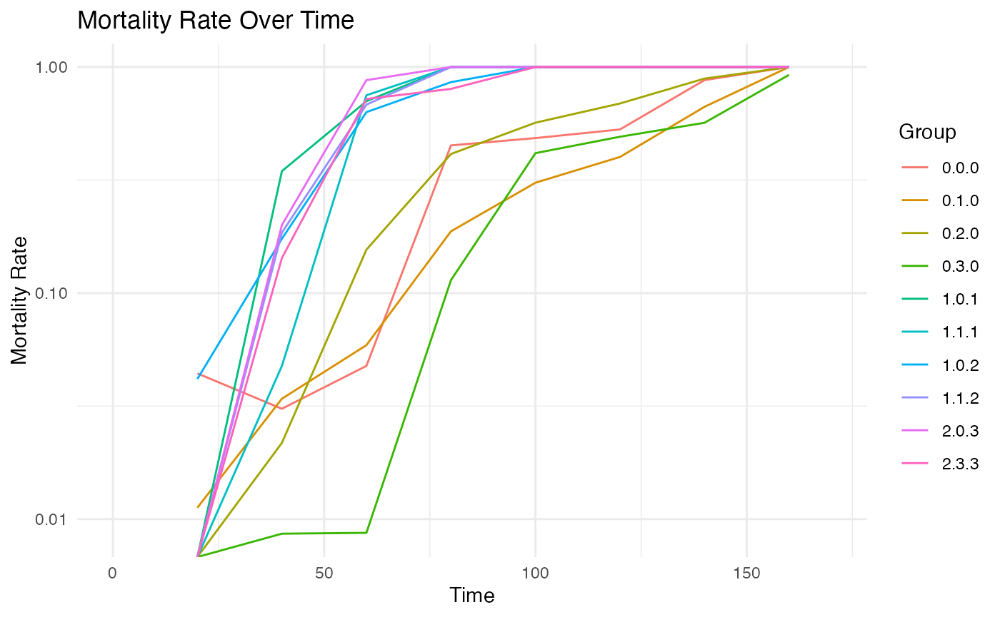

Mortality rate visualization
Source:vignettes/articles/mortality-rate-visualization.qmd
mortality-rate-visualization.qmdData preparation
df <- read.csv(here::here("data/raw_data/DataPierrick/100%mort_Pierrick211genoparinteraction.csv"))
df$geno <- as.factor(df$geno)
df$par <- as.factor(df$par)
df$spore <- as.factor(df$spore)
generate_clutch_vector <- function(N) {
return(paste("pon", rep(c("start", "end", "size"), N), rep(1:N, each = 3), sep = "_"))
}
clutchs <- generate_clutch_vector(28)
dataLFH <- lifelihoodData(
df = df,
sex = "sex",
sex_start = "sex_start",
sex_end = "sex_end",
maturity_start = "mat_start",
maturity_end = "mat_end",
clutchs = clutchs,
death_start = "mor_start",
death_end = "mor_end",
covariates = c("par", "geno", "spore"),
model_specs = c("wei", "lgn", "wei")
)Plot mortality rate
plot_emp_mortality_rate(dataLFH, interval_width = 20, max_time = 170, log_y = TRUE)## Warning in ggplot2::scale_y_log10(): log-10 transformation
## introduced infinite values.## Warning: Removed 10 rows containing missing values or values outside the scale range
## (`geom_line()`).
Get mortality rate
mort_df <- mortality_rate(dataLFH, interval_width = 5)
head(mort_df)## Interval Group MortalityRate
## 1 5 0.0.0 0.00000000
## 2 10 0.0.0 0.00000000
## 3 15 0.0.0 0.00000000
## 4 20 0.0.0 0.04411765
## 5 25 0.0.0 0.03076923
## 6 30 0.0.0 0.00000000